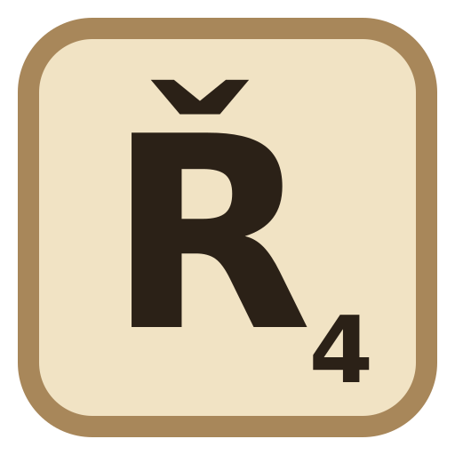

Omlouváme se, jste offline
Scrabble 3D generátor funguje jen s připojením k internetu – knihovny pro 3D náhled a export se stahují online. Jakmile budete zase připojeni, stránka se načte sama.

Scrabble 3D generátor funguje jen s připojením k internetu – knihovny pro 3D náhled a export se stahují online. Jakmile budete zase připojeni, stránka se načte sama.